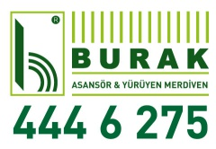

Hakkımızda
BURAK ASANSÖR | İNİŞTE VE ÇIKIŞTA HEP BİRLİKTEYİZ
BURAK, asansörde kalite ve güvenirliğin simgesidir. Bu özelliğini yarım asırlık alt yapı tecrübesi ve mükemmel
dünya teknolojisi çizgisinde inat ve sabırla, kaliteden ödün vermeden ilerlemesine borçludur.
1971 yılında Genel Müdürümüz Sn. AHMET TEMTEK tarafından SAB-YEM Asansör olarak kurulmuştur. 1994’ün sonuna
kadar başarılı bir şekilde hizmet veren şahıs firması, mahdumlarınında eğitimlerini tamamlamalarıyla 1995
yılından beri de BURAK ASANSÖR olarak sektöründe müşterilerine en iyi şekilde kaliteli hizmet vermektedir.